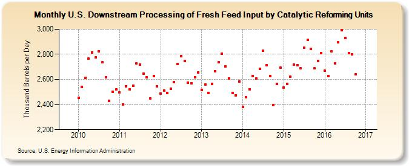

|
Download Data (XLS File) |
|
||||||||
|  | ||||||||
| U.S. Downstream Processing of Fresh Feed Input by Catalytic Reforming Units (Thousand Barrels per Day) | ||||||||
| Year | Jan | Feb | Mar | Apr | May | Jun | Jul | Aug | Sep | Oct | Nov | Dec |
|---|---|---|---|---|---|---|---|---|---|---|---|---|
| 2010 | 2,452 | 2,541 | 2,611 | 2,765 | 2,815 | 2,774 | 2,826 | 2,735 | 2,616 | 2,428 | 2,501 | 2,520 |
| 2011 | 2,497 | 2,400 | 2,545 | 2,519 | 2,549 | 2,730 | 2,719 | 2,646 | 2,616 | 2,447 | 2,629 | 2,545 |
| 2012 | 2,487 | 2,511 | 2,491 | 2,526 | 2,580 | 2,721 | 2,785 | 2,749 | 2,574 | 2,568 | 2,617 | 2,655 |
| 2013 | 2,515 | 2,558 | 2,494 | 2,562 | 2,666 | 2,739 | 2,806 | 2,703 | 2,608 | 2,494 | 2,474 | 2,584 |
| 2014 | 2,382 | 2,458 | 2,520 | 2,626 | 2,608 | 2,684 | 2,827 | 2,711 | 2,626 | 2,394 | 2,566 | 2,692 |
| 2015 | 2,537 | 2,563 | 2,624 | 2,717 | 2,714 | 2,689 | 2,853 | 2,915 | 2,841 | 2,688 | 2,746 | 2,810 |
| 2016 | 2,668 | 2,629 | 2,824 | 2,727 | 2,894 | 2,994 | 2,931 | 2,810 | 2,801 | 2,642 | 2,677 | |
| - = No Data Reported; -- = Not Applicable; NA = Not Available; W = Withheld to avoid disclosure of individual company data. |
| Release Date: 1/31/2017 |
| Next Release Date: 2/28/2017 |